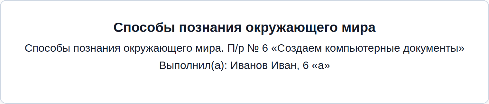
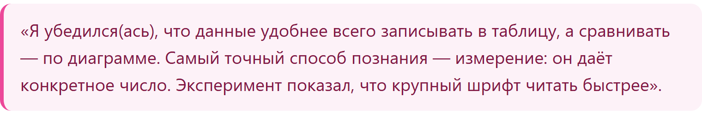

1🎯 Что должно получиться
В конце работы у вас должно быть два файла в одной папке: таблица с данными и текстовый отчёт.
📊
Пр6_Данные.ods
Таблица в LibreOffice Calc (Таблица LibreOffice): способ познания, что делали, результат, площадь и диаграмма.
📄
Пр6_Отчёт.odt
Отчёт в LibreOffice Writer (Текстовый документ LibreOffice): титул, 4 раздела, таблица, диаграмма и вывод.
📁
Готовая папка
Рабочий стол → 6 класс → 6а / 6б / 6в / 6г → Фамилия Имя. Папки уже созданы.
💡 Запомните правило: папки уже созданы на Рабочем столе — ничего создавать не нужно. Сначала откройте свою папку, потом сохраняйте в неё файлы.
А
Цель работы и краткая теорияЧто нужно знать перед началом
2Цель практической работы
Образовательная
Закрепить представления о способах познания: наблюдение, измерение, эксперимент.
Развивающая
Научиться собирать данные, заносить их в таблицу, строить диаграмму и оформлять отчёт.
Воспитывающая
Формировать аккуратность и ответственность за правильность данных и правила сохранения файлов.
3Краткая теория
| Способ познания | В чём суть | Пример |
|---|
| Наблюдение | Целенаправленное рассматривание предмета или явления. | Рассмотрели предметы на парте: цвет, форму, материал. |
| Измерение | Сравнение с единицей измерения, получение числа. | Измерили длину тетради линейкой — 21 см. |
| Эксперимент (опыт) | Проверка предположения в одинаковых условиях. | Сравнили время чтения текста разным шрифтом. |
Компьютерный документ — это информация, оформленная на компьютере и сохранённая в файле: текст, таблица, диаграмма. Сегодня вы создадите сразу два документа — таблицу и отчёт.
⚠️ Важно: числа в таблице должны быть взяты из ваших собственных наблюдений и измерений.
Не списывайте значения образца, если у вас получилось иначе.
Б
Папка для файловГотовим место на Рабочем столе
4Куда сохранять файлы
Путь на Рабочем столе:
Рабочий стол→
6 класс→
6а / 6б / 6в / 6гбуква вашего класса→
Фамилия Имянапример, Иванов Иван
| Ваш класс | Полный путь |
|---|
| 6 «а» | Рабочий стол/6 класс/6а/Фамилия Имя |
| 6 «б» | Рабочий стол/6 класс/6б/Фамилия Имя |
| 6 «в» | Рабочий стол/6 класс/6в/Фамилия Имя |
| 6 «г» | Рабочий стол/6 класс/6г/Фамилия Имя |
💡 Выберите только одну уже созданную папку с буквой своего класса. Внутри неё лежит готовая папка с вашим именем — новую папку создавать не нужно.
5Шаг 1. Откройте свою папку
Все папки уже созданы на Рабочем столе. Ваша задача — найти свою и больше ничего не создавать.
- На Рабочем столе Astra Linux откройте менеджер файлов «Файлы» (значок папки на панели или Главное меню → Файлы).
- В левой части окна выберите «Рабочий стол» (Desktop).
- Двойным щелчком откройте уже существующую папку 6 класс.
- Войдите в готовую папку со своей буквой:
6а, 6б, 6в или 6г.
- Войдите в уже созданную папку со своим именем, например
Иванов Иван. Именно сюда будем сохранять файлы.
⚠️ Не нажимайте «Создать папку» и не меняйте названия готовых папок — они уже настроены учителем.
Так должна выглядеть цепочка папок
Проверка: в строке адреса должно быть Рабочий стол → 6 класс → 6а → Иванов Иван. Все эти папки уже есть на Рабочем столе, создавать их не нужно.
В
Собираем данные и строим таблицуРабота в LibreOffice Calc (Таблица LibreOffice)
6Шаг 2. Соберите данные
Проведите три действия и сразу запишите результаты на черновике.
- Наблюдение. Рассмотрите 3 предмета на парте (тетрадь, учебник, линейку). Запишите цвет, форму и материал.
- Измерение. Линейкой измерьте длину и ширину тетради. Запишите, например: длина — 21 см, ширина — 14 см. Площадь посчитаем в Calc.
- Эксперимент. Попросите соседа по парте прочитать одну и ту же фразу два раза: сначала шрифтом 12, затем шрифтом 20. Засеките время. Запишите, например: 8 с и 5 с.
✅ Подсказка: для опыта можно взять фразу: «Информатика помогает познавать окружающий мир».
Главное — оба раза читал один и тот же человек и одну и ту же фразу.
7Шаг 3. Создайте таблицу в LibreOffice Calc (Таблица LibreOffice)
3.1. Откройте Calc
Главное меню Astra Linux → «Офис» → «LibreOffice Calc» (Таблица LibreOffice). Другой способ: нажмите Ctrl+Alt+T, введите libreoffice --calc и нажмите Enter.
3.2. Заполните основную таблицу
| Ячейка | Что ввести |
|---|
| A1 | Способ познания |
| B1 | Что делали |
| C1 | Результат |
| A2 | Наблюдение |
| B2 | Рассмотрели предметы на парте |
| C2 | Цвет, форма, материал |
| A3 | Измерение |
| B3 | Измерили тетрадь линейкой |
| C3 | 21 см × 14 см |
| A4 | Эксперимент |
| B4 | Читали фразу шрифтом 12 и 20 |
| C4 | 8 с и 5 с |
💡 Чтобы быстро расширить столбцы, выделите их заголовки (A, B, C) и дважды щёлкните по границе между ними — ширина подстроится под текст.
3.3. Посчитайте площадь тетради
- В ячейку E1 введите:
Площадь тетради, см².
- В ячейку E2 введите формулу
=21*14 и нажмите Enter.
- Должно получиться число 294. Если у вас получились другие размеры, подставьте свои числа, например
=20*15.
3.4. Подготовьте данные для диаграммы
В ячейки A7:B10 внесите данные опыта:
| A | B |
|---|
| Размер шрифта | Время чтения, с |
| 12 | 8 |
| 16 | 6 |
| 20 | 5 |
3.5. Вставьте диаграмму
- Выделите диапазон A7:B10 (протяните мышью от A7 до B10).
- Меню «Вставка» → «Диаграмма…».
- Выберите тип «Гистограмма» (Normal/Обычная) → нажмите «Готово».
- Щёлкните один раз за пределами диаграммы, чтобы выйти из режима её редактирования.
3.6. Сохраните таблицу
- Нажмите Ctrl+S.
- В поле имени введите ровно
Пр6_Данные. Фамилию добавлять не нужно — она уже есть в названии вашей папки.
- Тип файла оставьте ODF Spreadsheet (.ods).
- Проверьте в окне сохранения путь: Рабочий стол → 6 класс → 6а → Иванов Иван → нажмите «Сохранить».
✅ Работаем только в LibreOffice (Офисный пакет LibreOffice) и сохраняем в формате OpenDocument (ODF): таблица — ODF Spreadsheet (.ods), отчёт — ODF Text Document (.odt). Другие форматы не используем.
Г
Оформляем отчётРабота в LibreOffice Writer (Текстовый документ LibreOffice)
8Шаг 4. Создайте отчёт в LibreOffice Writer (Текстовый документ LibreOffice)
4.1. Откройте Writer и наберите титул
Главное меню → «Офис» → «LibreOffice Writer» (Текстовый документ LibreOffice). Наберите по центру:

Для 6 «б», 6 «в» и 6 «г» укажите свою букву класса.
4.2. Оформите четыре раздела
1. Что я узнал(а). Своими словами объясните три способа познания — наблюдение, измерение и эксперимент. По 1–2 предложения на каждый.
2. Результаты работы. Вставьте таблицу: меню «Таблица» → «Вставить таблицу», 3 столбца, 4 строки. Заполните её теми же данными, что и в Calc:
| Способ познания | Что делали | Результат |
|---|
| Наблюдение | Рассмотрели предметы на парте | Цвет, форма, материал |
| Измерение | Измерили тетрадь линейкой | 21 см × 14 см |
| Эксперимент | Читали фразу шрифтом 12 и 20 | 8 с и 5 с |
3. Диаграмма. Перейдите в открытый Calc (Таблица LibreOffice), щёлкните один раз по белому полю диаграммы (не по столбцам), нажмите Ctrl+C. Вернитесь в Writer (Текстовый документ LibreOffice), поставьте курсор после заголовка «3. Диаграмма», нажмите Ctrl+V. Если появится вопрос, выберите «Встроенный объект LibreOffice».
Под диаграммой добавьте подпись по центру:
4. Вывод. Напишите 2–3 предложения. Пример:

💡 Не копируйте вывод дословно — напишите своими словами, опираясь на свои результаты.
9Шаг 5. Оформите документ: шрифт, размер, интервалы, абзацы
Если прошлые уроки вы плохо запомнили — не страшно. Делайте всё по порядку, как написано ниже. Главное — сначала выделить текст, а потом менять настройки.
5.1. где находятся нужные кнопки
В LibreOffice Writer (Текстовый документ LibreOffice) сверху есть меню (Файл, Правка, Вид, Вставка, Формат…), а под ним — панель форматирования. На ней слева направо:
- поле «Имя шрифта» — там написано текущее название шрифта;
- рядом поле «Размер шрифта» — там число 12;
- далее четыре кнопки с полосками — выравнивание: по левому краю, по центру, по правому краю, по ширине.
💡 Если панель форматирования не видно, зайдите «Вид» → «Панели инструментов» → «Форматирование» и поставьте галочку.
5.2. Меняем шрифт и размер у всего текста
- Щёлкните куда-нибудь внутри отчёта и нажмите Ctrl+A — выделится весь текст документа.
- Щёлкните по полю «Имя шрифта» на панели форматирования. Старое название выделится; если нет — нажмите Ctrl+A, пока курсор в этом поле.
- Наберите
Liberation Sans и нажмите Enter. Весь текст поменяет шрифт.
- Теперь щёлкните по полю «Размер шрифта», выделите число, наберите
14 и нажмите Enter.
⚠️ После нажатия Enter выделение текста не пропадёт — можно сразу переходить к следующему шагу.
5.3. Делаем абзацы: интервал и красная строка
- Не снимая выделения (Ctrl+A), откройте меню «Формат» → «Абзац…».
- В открывшемся окне выберите вкладку «Отступы и интервалы».
- В блоке «Отступы» задайте:
- Перед текстом —
0,00 см;
- После текста —
0,00 см;
- Первая строка —
1,25 см. Это и есть красная строка.
- В блоке «Межстрочный интервал» выберите из списка «1,5 строки».
- Нажмите кнопку OK. Все абзацы отчёта получат отступ 1,25 см и интервал 1,5.
5.4. Выравниваем текст и заголовки
- Выделите весь текст (Ctrl+A) и нажмите Ctrl+J — основной текст выровняется по ширине.
- Теперь выделите только две верхние строки (название темы и название работы) и нажмите Ctrl+E — они станут по центру.
- У этих же двух строк уберите красную строку: «Формат» → «Абзац…» → «Отступы и интервалы» → Первая строка — 0,00 см → OK.
- Название темы можно сделать покрупнее: выделите его, в поле «Размер шрифта» введите
16 и нажмите Enter.
✅ Проверьте: у обычных абзацев есть красная строка, а у заголовков её нет и они стоят по центру.
5.5. Оформляем таблицу и подпись к рисунку
- Щёлкните внутри таблицы, нажмите Ctrl+A — выделится текст таблицы. Поставьте шрифт Liberation Sans, размер 12, чтобы слова помещались в ячейки.
- Чтобы были видны линии: «Таблица» → «Свойства…» → вкладка «Границы» → выберите «Все границы» → OK.
- Щёлкните по подписи «Рис. 1…», нажмите Ctrl+E (по центру) и поставьте размер 12.
5.6. Что проверить перед сохранением
- Шрифт везде Liberation Sans (проверьте, щёлкнув по разным местам текста).
- Основной текст — 14, заголовок темы — 16, таблица и подпись — 12.
- Интервал 1,5 строки, красная строка 1,25 см, текст — по ширине.
- У заголовков красной строки нет, они по центру.
10Шаг 6. Сохраните в формате OpenDocument и покажите учителю
- Нажмите Ctrl+S → имя ровно
Пр6_Отчёт → тип ODF Text Document (.odt) → «Сохранить». Фамилию в имя файла не добавляем — она есть в папке.
- Откройте свою папку и убедитесь, что в ней лежат два файла:
.ods и .odt. Это и есть формат OpenDocument (ODF).
- Закройте и снова откройте оба файла двойным щелчком — они должны открыться в LibreOffice (Офисный пакет LibreOffice) без ошибок.
- Поднимите руку. Покажите учителю отчёт на экране и окно папки, где сохранены файлы.
⚠️ Не переименовывайте файлы и не меняйте расширения: .ods и .odt — это формат OpenDocument, в котором учитель проверяет работу.
Д
Проверка и оцениваниеЧек-лист, критерии, ошибки
11Проверьте себя по чек-листу
Отмечайте пункты по одному. Когда все галочки будут стоять, работа готова.
💡 Если какой-то пункт не выполняется, вернитесь к нужному шагу: за папку отвечает шаг 1, за таблицу — шаг 3, за отчёт — шаг 4.
12Как оценивается работа
| Оценка | Что сделано |
|---|
| 5 | Оба файла в правильной папке, данные верные, таблица и диаграмма оформлены, вывод самостоятельный и грамотный. |
| 4 | Всё выполнено, но есть 1–2 недочёта в оформлении: например, нет подписи к рисунку или не тот интервал. |
| 3 | Есть отчёт и таблица, но отсутствует диаграмма или вывод. |
| 2 | Задание выполнено частично, файлы не сохранились в нужной папке с буквой класса. |
13Частые ошибки в Astra Linux
| Проблема | Как исправить |
|---|
| Имя файла набрано латиницей вместо кириллицы. | Переключите раскладку (Ctrl+Shift) и переименуйте файл. |
| Файл сохранился не туда. | В окне сохранения слева выберите «Рабочий стол» и проверьте путь вверху. |
| В окне сохранения выбран не формат OpenDocument. | Выберите ODF Text Document (.odt) или ODF Spreadsheet (.ods). Это формат OpenDocument (ODF), другие форматы не используем. |
| Диаграмма не вставляется в Writer. | Скопируйте её, кликнув один раз по белому полю диаграммы; в Writer — Ctrl+V и выберите «Встроенный объект». |
| Русский текст отображается кракозябрами. | Выделите текст и установите шрифт Liberation Sans (поле «Имя шрифта» на панели форматирования). |
| Формула в E2 показывает текст, а не число. | Проверьте, что в начале введён знак = без пробела. |
14Дополнительное задание
Если закончили раньше других, добавьте в конец отчёта раздел «Способы познания в других предметах»: запишите по одному примеру наблюдения (биология), измерения (физика) и эксперимента (химия).
🏆 За дополнительное задание можно получить бонусный балл, если примеры не повторяют примеры из практической работы.
15Мини-словарик
Наблюдение
Целенаправленное рассматривание предмета или явления.
Измерение
Сравнение величины с единицей измерения, результат — число.
Эксперимент
Опыт, который проверяет предположение в одинаковых условиях.
Компьютерный документ
Информация, оформленная на компьютере и сохранённая в файле.
Формула
Запись в ячейке Calc, начинается со знака «=» и вычисляет значение.
Диаграмма
Наглядное представление данных; позволяет быстро сравнивать числа.
ODS
Формат файла таблицы LibreOffice Calc (Таблица LibreOffice).
ODT
Формат файла текстового документа LibreOffice Writer (Текстовый документ LibreOffice).
🏆 Работа готова!
Теперь вы умеете собирать данные наблюдения, измерения и опыта, оформлять их в таблице
и представлять результаты в виде отчёта с диаграммой.
Рабочий стол → 6 класс → 6а/6б/6в/6г → Фамилия Имя → Пр6_Данные.ods и Пр6_Отчёт.odt
Практическая работа № 6 · 6 класс · УМК Босовой · LibreOffice (Офисный пакет LibreOffice) · Astra Linux 1.8